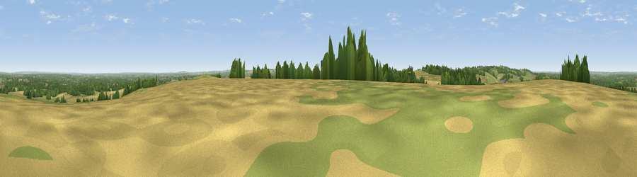

Viewpoint near Ramsdell
#25355 in England · top 15% of its area beats it · near Ramsdell · access?Where it is
The exact computed spot (SU 58507 55331). Click the marker for map links.
Public access: no public right of way or access land is recorded at this exact spot — it may be on private land. Computed from Natural England's CRoW access layer and OpenStreetMap rights of way — not the legal definitive map. Always verify locally.
The view, rendered

A 360° render of this exact spot computed from the terrain model, tree cover and land cover — summer colours, afternoon light, calibrated against photographs of famous viewpoints. Real trees, hedges and buildings will differ in detail.
The panorama
Grey silhouette: terrain skyline in each direction (720 bearings, Earth curvature and refraction included). Dashed green: skyline with trees (+15 m) and buildings (+8 m) as obstacles. Blue strip: how far the ground is visible on each bearing.
Where the view opens
Wedge length = distance to the farthest visible ground on that bearing (vegetation-aware). Rings at 10, 25 and 50 km.
What fills the view
36% cropland · 32% grassland · 28% woodland · 4% built-up
Angular shares of the visible panorama (visual magnitude), not map area. Landscape diversity 0.53 (0–1 Shannon).
Key numbers
More beautiful places nearby
The staircase of upgrades: each row has a higher view potential than everything closer. Driving times are estimates from straight-line distance, calibrated against real road routing — check an actual route before setting out.
| Place | Direction | Drive | Score |
|---|---|---|---|
| Viewpoint near Hannington | WNW · 6 km | ~13 min | 61.0 |
| Cottington's Hill | WNW · 6 km | ~13 min | 65.0 |
| Viewpoint near Ecchinswell | WNW · 9 km | ~17 min | 65.7 |
| Watership Down | W · 9 km | ~18 min | 71.4 |
| Beacon Hill | W · 13 km | ~24 min | 76.7 |
| Viewpoint near Buriton | SSE · 37 km | ~56 min | 80.0 |
| Beacon Hill | SSE · 43 km | ~63 min | 85.8 |
| Chanctonbury Ring | SE · 70 km | ~94 min | 87.0 |
51.29412, -1.16230 · source: osm peak · position refined by local search. Computed location — check access rights before visiting.